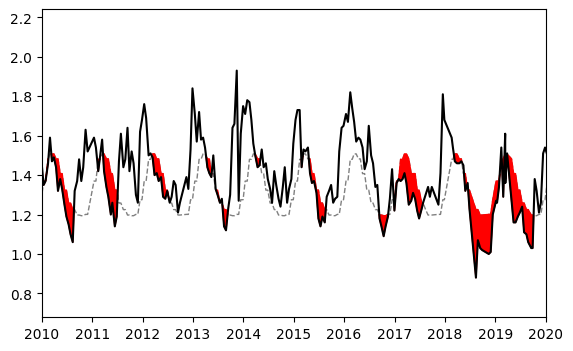

Threshold Drought¶
Load packages¶
[1]:
import pandas as pd
from scipy import stats as sps
import spei as si
Load data¶
[2]:
df = pd.read_csv("data/DEBILT.csv", index_col=0, parse_dates=True)
prec = df["Prec [m/d] 260_DEBILT"].multiply(1e3).rename("prec")
evap = df["Evap [m/d] 260_DEBILT"].multiply(1e3).rename("evap")
head = df["Head [m] B32C0572_DEBILT"].rename("head").dropna()
Calculate precipitation surplus¶
[3]:
surplusd = prec - evap
surplus = surplusd.resample("MS").sum()
surplus.plot()
[3]:
<Axes: >
Fit distribution¶
[4]:
dist = sps.fisk
sispei = si.SI(
series=surplus,
dist=dist,
timescale=0,
)
sispei.fit_distribution()
Get threshold¶
Choose arbitrary threshold based on quantile of the distribution. Can be any threshold the user wants as well. Only then the threshold time series has to be created manually.
[5]:
speithr = sispei.ppf(0.3) # 30% quantile threshold
Plot threshold¶
[6]:
ax = si.plot.threshold(
series=sispei.series,
threshold=speithr,
fill_color="red",
)
_ = ax.set_xlim(pd.Timestamp("2010"), pd.Timestamp("2020"))
Repeat for head time series¶
[7]:
timescale = 6
sisgi = si.SI(
head,
dist=sps.norm,
timescale=timescale,
fit_freq="MS",
normal_scores_transform=True,
agg_func="mean",
)
sgithr = sisgi.ppf(0.4) # choose arbitrary threshold
[8]:
ax = si.plot.threshold(
series=head.iloc[timescale - 1 :],
threshold=sgithr,
fill_color="red",
)
_ = ax.set_xlim(pd.Timestamp("2010"), pd.Timestamp("2020"))
